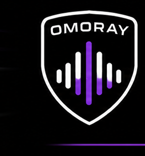

CHECKING FOR UPDATES
Talk strategy before the start.
Get calm, timely support during the race.
Debrief every result and leave with one clear mission.
Eight engineers. Different styles, same mission — get you across the line.


One-time US$9.99 payment. Valid for 30 days from activation, with no automatic renewal.
Five races is a guide, not a guarantee. Heavier-than-expected use can mean fewer sessions within the included use.

OMORAY PITWALL